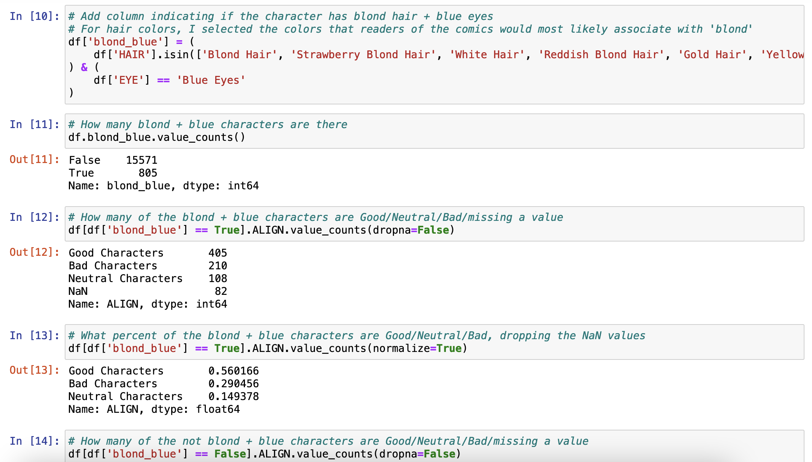
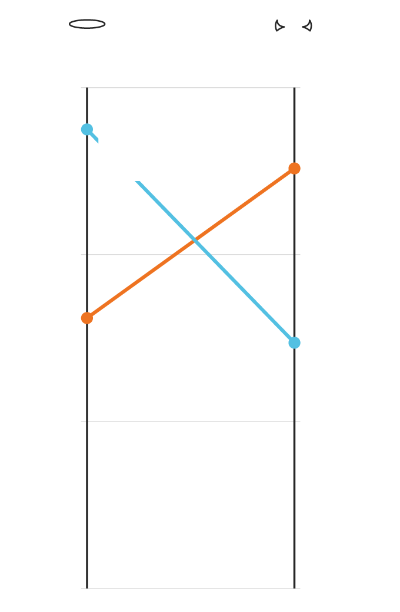
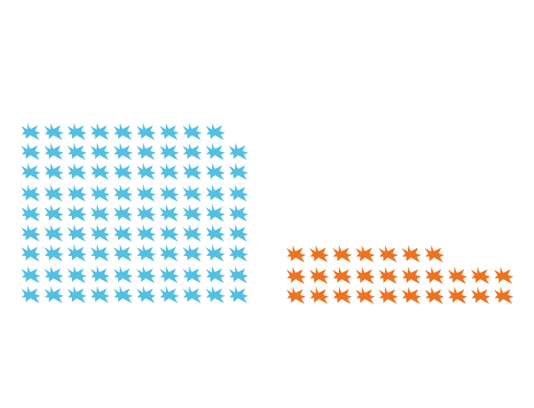

Brianna Wilson
3D & Data Visualization
What do Comic Book Heroes Look Like?
- Python
- Pandas
- Jupyter
- Illustrator
- Ai2html
- API's

Source: wikimedia
On first seeing a dataset of all Marvel characters (16,376 of them!), my mind filled with questions. Having a huge database of characters labeled ‘good’ or ‘bad,’ along with completely made-up attributes (hair color, sex, etc.), would be fertile ground for finding society’s biases reflected back at us. Doing more digging, I discovered a matching dataset for characters in the DC comics.
Loading in the data, I found predictable things, like that men appear far more than women in the the comic canons. Looking at some of the other fields, I wondered if characters with lighter hair and eye colors were more often portrayed as ‘good.’
There were several lighter hair colors among the characters. Extracting those, I also filtered down to characters with blue eyes. Other lighter eye colors, like yellow and pink, I skipped, since they don’t occur naturally.

In that filtered subset of characters there was, indeed, a strong bias:
Over Half of Marvel Characters with Light Hair and Eyes are ‘Good,’ Whereas Just Over Half of all Other Characters are ‘Bad’

GOOD
BAD
60%
56%
of characters with light hair + eyes are good
51%
are bad
40
33%
29%
of all other characters are good
are bad
20
(remaining characters are neutral)
0

GOOD
BAD
60%
56%
of characters with light hair + eyes are good
51%
are bad
40
33%
of all other characters are good
29%
are bad
20
(remaining characters are neutral)
0
Data: fivethirtyeight
Showing this to a mentor in the Lede program, she suggested looking at if this had changed over time. Going back to the data, I found that it included the year of first appearance for each character.
Because Marvel introduces wildly varying numbers of characters each year, the data came out quite noisy. Adding trend lines indicated that, in general, there was a wide gap in the 1940s between who was portrayed as ‘good,’ which narrowed as time went on (data ends at 2014).
Over Time, the Bias Towards Introducing New Characters with Light Hair and Eyes as ‘Good’ Has Diminished

percent of new characters with light hair + eyes who are labeled Good
percent of all other new characters who are labeled Good
100%
80
Gap has almost disappeared over time
60
40
20
0
1940
1950
1960
1970
1980
1990
2000
2010
year

percent of new characters with light hair + eyes who are labeled Good
percent of all other new characters who are labeled Good
100%
Gap has almost disappeared over time
80
60
40
20
0
1940
1980
1960
2000
year
Data: fivethirtyeight
Since this just showed the year characters were introduced, I wondered if older characters were still having an outsized influence. I searched for anything else in the data to use, and didn’t find the ideal; the number of appearances for each character by year. Instead, using the overall number of appearances for each character as a substitute, I found a stark difference in representation:
‘Good’ Characters with Light Hair and Eyes Appear Over Three Times More than all Other ‘Good’ Characters

good characters with light hair + eyes
all other good characters
89 average appearances
27 average appearances

good characters with light hair + eyes
all other good characters
89 average appearances
27 average appearances
Data: fivethirtyeight
Loading in the dataset for DC characters, it had very similar findings.
In trialing ways to make insights from this data engaging, I found that it was much more effective to start from a place of finding the insights and visualizing those, rather than trying to visualize all of the data at once. However, an explorable database of superheroes and villains would be massively fun.
There’s tons more I want to explore and expand upon in this dataset:
- Using the MediaWiki API, download data from 2014 to now, to see how the trends play out
- Scrape the number of appearances for each character by year to see the influence of legacy characters
- Make an interactive database explorer!
- How does the gap-over-time look when based on ‘bad’ characters?
- Are the above findings similar with just hair color, or just eye color?
- What words are most associated with women, men, and nonbinary characters?
- What words are most associated with good and bad characters?
- From a cursory glance at the data, it looks like descriptions of sexual orientation and relationships show up more for women characters, is this true?
- Do women and nonbinary characters have more appearances over time?
- Do the eye and hair color associations with ‘goodness’ show up differently for nonbinary, women, and men characters?
- Do these findings apply to the movies?